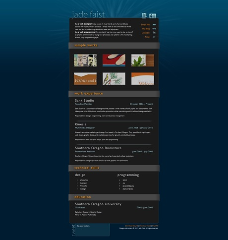
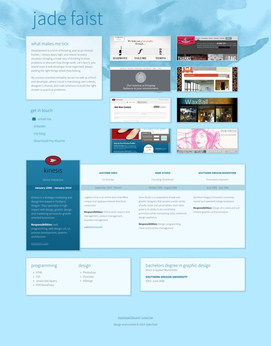
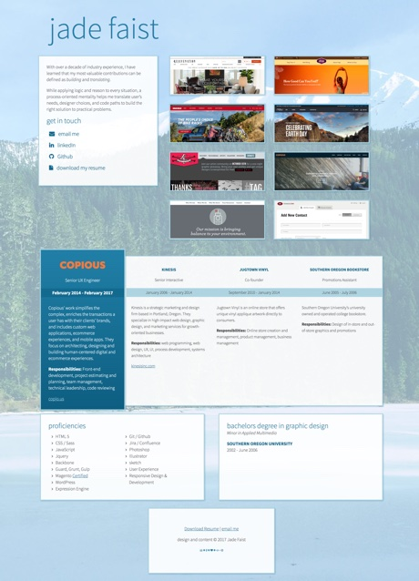

What exactly is it?
Well, it's my personal portfolio site. Its focus is showcasing my career trajectory, with the projects I've been a part of and my work experience being the most important. Really, it's a more interesting version of my resume.
Almost entirely hand built, the goal is to do the most with the least. Balancing minimal depenencies on libraries and frameworks with a low barrier for updating and adding on my end.
It's evolved over the years. Visually as well as technically. Here's the (Rough) visual timeline:
2010 to 2013

2014 to 2016

2016 to present

How does it work?
Important aspects
- Gulp task runner
- Mustache templates
- Sass (Compass)
Other things of note
- JavaScript Linting (eslint)
- Sass Linting (sass-lint)
- Browser-sync
- Imagemin
- Retina.js
- Deploy script
- little bit of php in portfolio
What's the future?
Likes / Dislikes
- Its my own thing
- No frameworks, minimal library use
- Simple update / deployment
- Some rusty edges / learning still floating around
- Writing is hard, some of the content could be better
- Visual impact of projects could be stronger
Things to keep an eye on
- Periodic visual refresh
- Completely refactor portfolio function
- Add new content
Interested in the Nitty Gritty? The current TODO list can be found here.